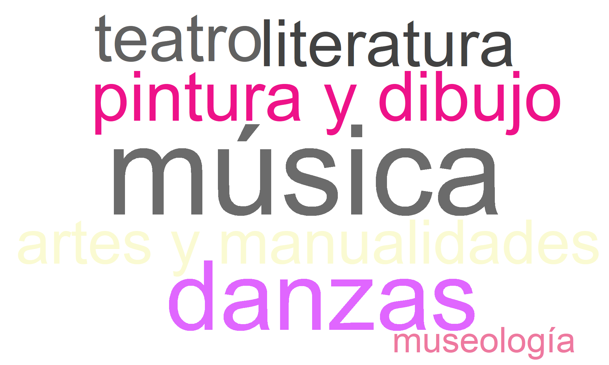
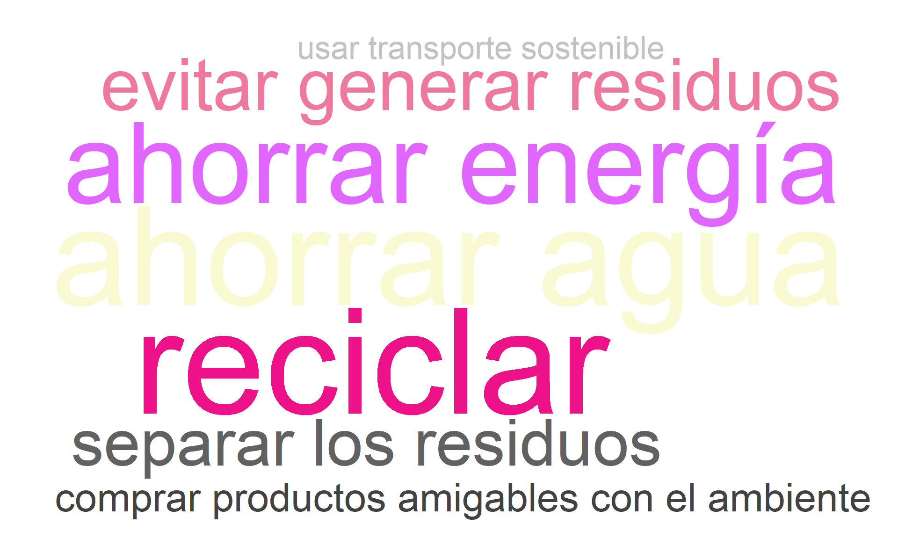
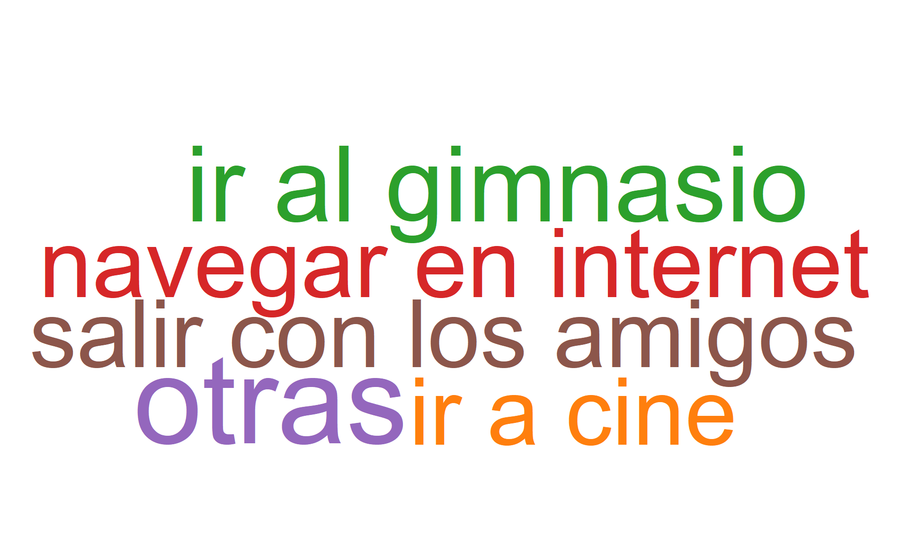
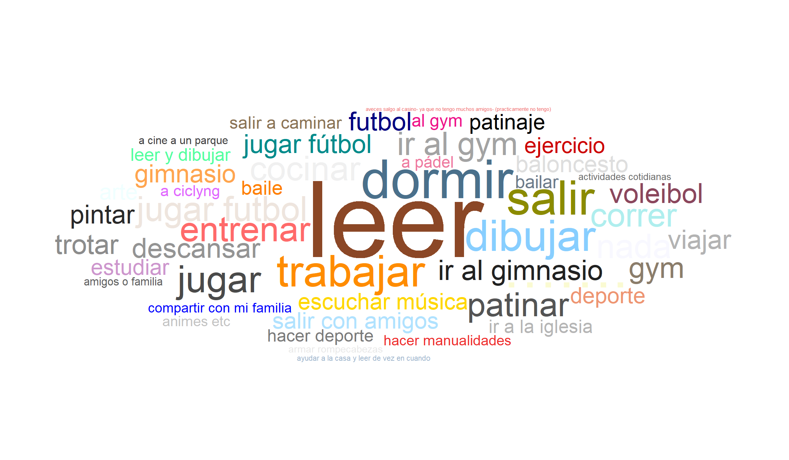
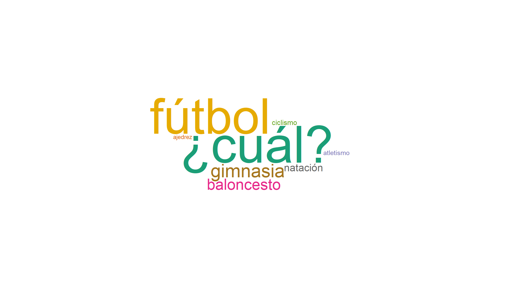
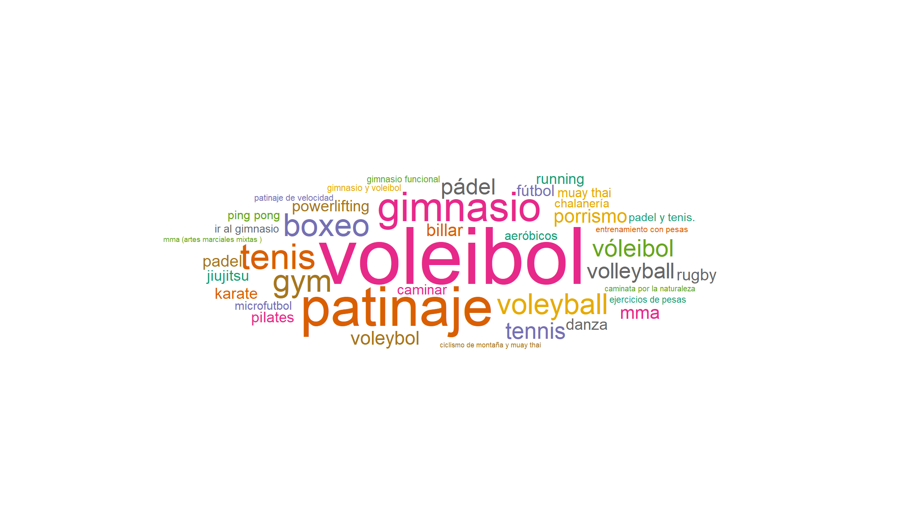
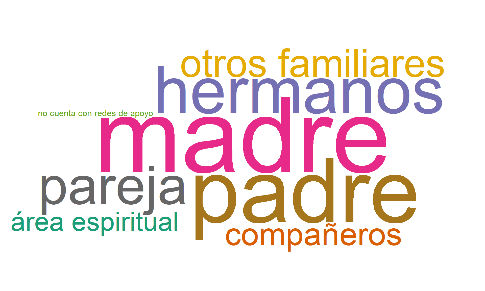
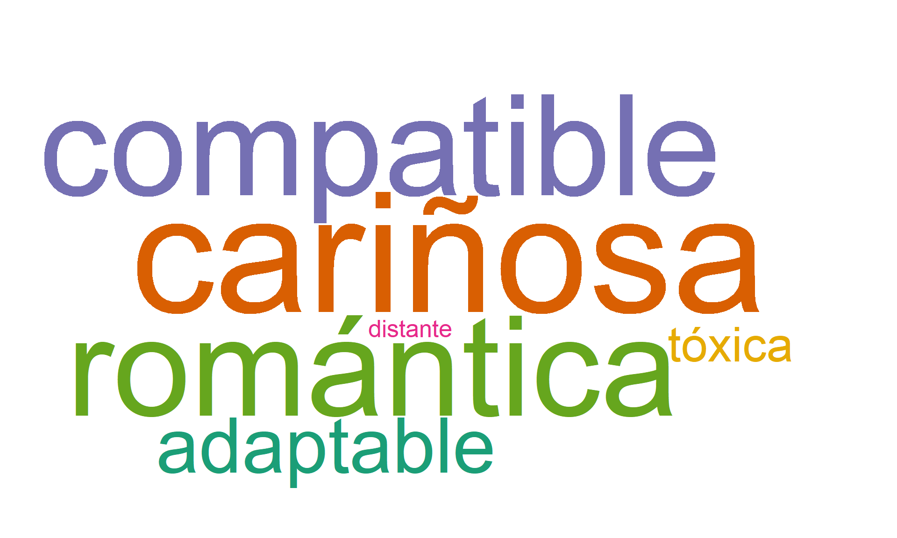

7 Secciones 4, 5 y 6: Fomento de la cultura, deportes y esparcimiento, y desarrollo humano
Aclaración importante
En los gráficos y filtros, el nombre Cúcuta aparecerá como Cucuta y Bogotá se mostrará como un campus independiente.
7.1 Sección: Fomento de la cultura
7.1.1 ¿Cuáles de las siguientes disciplinas artísticas le atrae?
Descripción para todos los campus
La nube de palabras muestra que el principal interés se concentra en música, seguida por artes y manualidades, pintura y dibujo y danzas. En menor proporción aparecen literatura, teatro y museología, lo que refleja una diversidad de afinidades dentro del ámbito cultural.
7.1.2 ¿Cuenta con alguna habilidad artística?
Descripción para todos los campus
Alrededor del 28,9% de los estudiantes afirma tener alguna habilidad artística, mientras que la mayoría, equivalente al 71,1%, no se identifica con este tipo de capacidades. Estos resultados muestran que, aunque la proporción de estudiantes con inclinaciones artísticas no es mayoritaria, sí existe un grupo significativo que puede aportar a la vida cultural universitaria.
7.1.3 Habilidad artística que posee.
Descripción para todos los campus
La nube de palabras muestra que la habilidad predominante es el dibujo, seguida por la danza y la pintura. También destacan las manualidades, el canto y la práctica de tocar instrumentos, especialmente la guitarra. En menor medida aparecen referencias al baile y a otras expresiones creativas.
7.1.4 ¿Le gustaría dedicar tiempo de su actividad académica o laboral para aprender o fortalecer sus habilidades artísticas?
Descripción para todos los campus
Un 71,6% de los estudiantes manifestó interés en dedicar tiempo de su vida académica o laboral para aprender o fortalecer sus habilidades artísticas, frente a un 28,4% que no lo considera. Este hallazgo evidencia una oportunidad para ampliar la oferta de programas extracurriculares de formación artística dentro de la universidad.
7.1.5 ¿Qué día de la semana tiene más disponibilidad de tiempo, para dedicarle a éste aprendizaje artístico?
Descripción para todos los campus
A la pregunta sobre qué día de la semana tienen mayor disponibilidad de tiempo para dedicar al aprendizaje artístico, los resultados muestran que el sábado concentra la mayor proporción (24,2%), seguido por el domingo (17,5%) y el viernes (16,8%). Luego se ubican el lunes (14,6%), el jueves (10,0%) y el miércoles (9,0%), mientras que el martes (7,8%) presenta la menor disponibilidad.
7.1.6 ¿Cuáles de las siguientes prácticas ambientales practica usted diariamente?
Note
Entre las prácticas ambientales más frecuentes reportadas por los estudiantes se destacan el ahorro de agua y el ahorro de energía, seguidas por el reciclaje, la promoción del cuidado del ambiente en su entorno y la prevención en la generación de residuos. En menor proporción, también se identifican acciones como la separación de residuos, la compra de productos amigables con el ambiente y el uso de transporte sostenible. En conjunto, estos resultados evidencian una conciencia ambiental en la comunidad estudiantil, orientada al consumo responsable y al uso eficiente y sostenible de los recursos naturales.

7.2 Sección. Deportes y Esparcimiento
7.2.1 ¿Realiza actividad física?
Descripción para todos los campus
La categoría más frecuente corresponde a los estudiantes que sí realizan actividad física (48,0%), seguida por quienes la practican a veces (34,4%). Por su parte, un 17,7% declara no realizar ningún tipo de ejercicio. Esto indica que una parte importante del estudiantado mantiene algún nivel de actividad, aunque persiste un grupo que requiere mayor motivación para fomentar la práctica regular del ejercicio.
7.2.2 ¿Cuántas veces a la semana realiza actividad física?
Descripción para todos los campus
El análisis de la frecuencia semanal muestra que la mayor parte de los estudiantes realiza actividad física entre 1 y 2 veces (42,6%), seguido por un 36,0% que lo hace entre 3 y 4 ocasiones. Por su parte, el 21,5% afirma ejercitarse más de 5 veces en la semana. Esto refleja que, aunque existe un sector comprometido con la práctica frecuente, predomina un nivel bajo o moderado de regularidad en la mayoría de la población estudiantil.
7.2.3 Su tiempo libre lo dedica, generalmente a:
Descripción para todos los campus
Las actividades de tiempo libre más mencionadas por los estudiantes son navegar en internet y salir con los amigos, seguidas de ir al gimnasio y chatear e interactuar en redes sociales. En menor proporción aparecen otras actividades agrupadas en la categoría “otras” y la opción de ir a cine. En conjunto, estos resultados evidencian una marcada preferencia por actividades sociales, digitales y de autocuidado físico dentro de la dinámica cotidiana del estudiantado.

7.2.4 ¿Qué otras actividades realiza durante su tiempo libre?
Descripción para todos los campus
Los estudiantes mencionan otras actividades de tiempo libre, en las que predominan acciones como leer, trabajar y dormir. También se destacan actividades como dibujar, jugar fútbol, ir al gimnasio, salir y otras prácticas de recreación y autocuidado. Esta diversidad evidencia que el tiempo libre se distribuye entre el desarrollo personal, la actividad física, el descanso y espacios de recreación y bienestar.

7.2.5 ¿Le gusta la lectura?
Descripción para todos los campus
Al consultar por la afinidad hacia la lectura, un 63,6% de los estudiantes indicó que le gusta leer, mientras que un 36,4% no comparte esa preferencia. Este dato es relevante ya que la proporción de estudiantes interesados en la lectura abre la posibilidad de fortalecer espacios como clubes, talleres o programas culturales que promuevan la formación de hábitos lectores dentro de la universidad.
7.2.6 ¿Cuántos libros lee al año?
Descripción para todos los campus
La mayoría de los estudiantes se concentra en niveles bajos de lectura anual: el 54,9 % reporta leer entre 0 y 10 libros al año. En una proporción menor, el 27,4 % indica leer entre 11 y 25 libros, mientras que el 13,4 % alcanza entre 26 y 100 libros. Solo un 4,3 % supera los 100 libros anuales.
7.2.7 ¿Practica algún deporte?
Descripción para todos los campus
El 38,9% de los estudiantes manifiesta practicar algún deporte, en contraste con el 61,1% que no lo hace. Esto refleja que la mayor parte de la población no mantiene rutinas deportivas, lo cual representa un reto para incentivar la actividad física como parte de un estilo de vida saludable dentro de la comunidad universitaria.
7.2.8 ¿Qué tipo de deporte practica con más frecuencia?
Descripción para todos los campus
El fútbol se posiciona como la disciplina más practicada entre los estudiantes, seguido por la gimnasia y el baloncesto. En menor medida aparecen otras actividades como la natación, el atletismo, el ciclismo y el ajedrez. Este panorama evidencia una diversidad de intereses deportivos que integra tanto el ejercicio físico como el desarrollo mental.

7.2.9 ¿Qué otros deportes practica?
Descripción para todos los campus
Más allá de las disciplinas más comunes, los estudiantes también reportan la práctica de una amplia variedad de deportes. Entre los más mencionados se destacan el voleibol y el patinaje, seguidos por el gimnasio, el boxeo y el tenis. Asimismo, aparecen referencias a otras prácticas especializadas, lo que refleja una comunidad estudiantil con intereses deportivos variados, que combina actividades recreativas y de entrenamiento integral.

7.3 Sección. Desarrollo humano
7.3.1 ¿Cuál es su estado de salud mental actualmente?
Descripción para todos los campus
Un 46,7% de los estudiantes califica su estado de salud mental como bueno, mientras que el 42,1% lo describe como excelente. En menor medida, el 8,6% lo percibe como regular y un 2,5% no sabe cómo evaluarlo. En conjunto, cerca del 88,8% expresa encontrarse en condiciones favorables, aunque persiste una minoría que refleja niveles menos óptimos y que merece atención.
7.3.2 ¿Siente apoyo emocional por parte de su familia?
Descripción para todos los campus
La gran mayoría de los estudiantes (93,0%) asegura recibir apoyo emocional de su familia, mientras que un 7,0% indica no contar con este respaldo. Este alto porcentaje de acompañamiento familiar constituye un factor protector clave, al reforzar el bienestar emocional y académico de los estudiantes.
7.3.3 ¿Quiénes considera que son sus redes de apoyo actualmente?
Descripción para todos los campus
Los estudiantes mencionan que la madre y el padre constituyen las principales redes de apoyo, seguidos por los hermanos, los otros familiares y la pareja. Asimismo, se reconocen como fuentes de acompañamiento los compañeros y el área espiritual. En menor medida aparecen los casos en los que no se identifica una red de apoyo. En conjunto, los resultados confirman que el núcleo familiar continúa siendo el principal soporte emocional, complementado por relaciones sociales cercanas.

7.3.4 ¿Tiene actualmente pareja sentimental?
Descripción para todos los campus
Alrededor de un tercio de los estudiantes (31,6%) reporta tener una relación sentimental, mientras que la mayoría (68,4%) no cuenta con pareja en este momento. Este resultado sugiere que una proporción significativa de la población estudiantil se encuentra soltera, lo que puede tener relación con sus dinámicas académicas, personales o sociales.
7.3.5 ¿Cómo percibe que es su relación con su pareja?
Descripción para todos los campus
Los estudiantes que reportan tener pareja describen mayoritariamente sus relaciones con características positivas, destacándose términos como cariñosa, compatible, romántica y adaptable, los cuales concentran la mayor presencia. No obstante, también se registran, aunque con menor frecuencia, percepciones negativas, como relaciones tóxicas o distantes.

7.3.6 ¿Cómo considera su relación con sus padres (con quien conviva-madre o padre):
Descripción para todos los campus
La mayoría de los estudiantes percibe su relación con los padres como cercana (56,1%) o muy estrecha (30,9%). Un 9,5% señala que, a pesar de la cercanía, existen conflictos, y un 3,6% describe el vínculo como distante. En general, cerca del 87,0% reconoce una buena relación familiar, lo cual coincide con los altos niveles de apoyo emocional señalados en otras preguntas.
7.3.7 En su contexto familiar (familia de origen) usted experimenta o experimentó
Descripción para todos los campus
En el contexto de la familia de origen, la mayoría de los estudiantes manifiesta no haber experimentado ningún tipo de violencia (90,4 %). Entre quienes sí reportan haber vivido estas situaciones, la violencia psicológica (4,7 %) y la violencia física (2,8 %) son las más frecuentes, mientras que la violencia económica (1,4 %), la sexual (0,6 %) y la patrimonial (0,1 %) se presentan en proporciones muy reducidas. En conjunto, los resultados indican que la mayor parte del estudiantado proviene de entornos familiares sin antecedentes de violencia, aunque subsisten casos puntuales que requieren atención y acompañamiento oportuno.
7.3.8 En su contexto familiar (familia conformada) usted experimenta o experimentó
Descripción para todos los campus
En el contexto familiar, la mayoría de los estudiantes indica no haber conformado aún una familia propia (94,2 %). Entre quienes sí lo han hecho, la presencia de situaciones de violencia es baja, siendo la violencia psicológica (2,6 %) y la violencia económica (1,5 %) las más reportadas. En porcentajes menores aparecen la violencia física (1,1 %), la sexual (0,4 %) y la patrimonial (0,1 %). Estos datos sugieren que, en los casos de familia conformada, los episodios de violencia son poco frecuentes, aunque requieren atención y seguimiento oportuno.